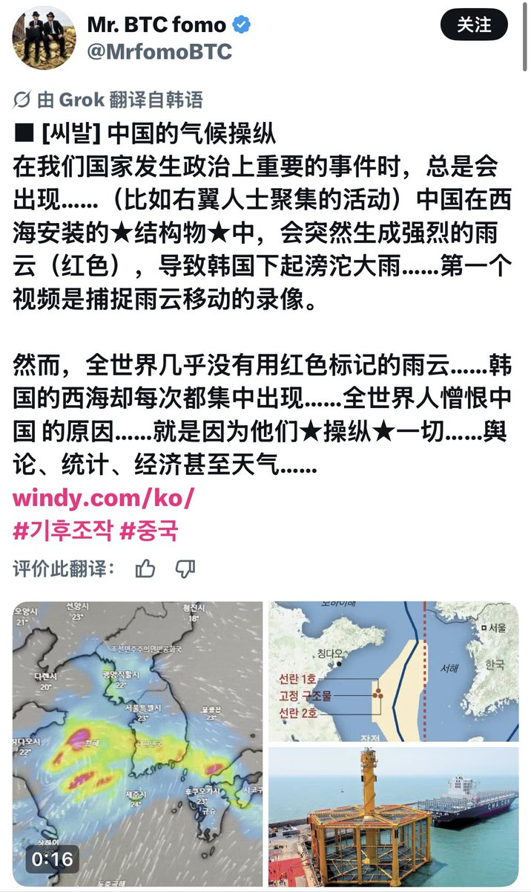
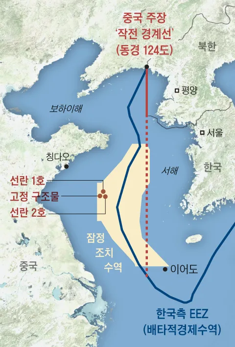

サイバー環状線
@CyberKanjousen
天啊！🤯中国人真是太坏了😢竟然发动气象武器操纵大韩民国选举！😠大韩民国一切政治问题都是中国人干的！😡中国人怎么会这么坏啊😭


Mr. BTC fomo
@MrfomoBTC
■ [씨발] 중국의 기후조작
우리 나라에서 정치적으로 중요한 사건이 생기면 꼭...(우파들이 모이는 행사라던지) 중국이 서해에 설치한 ★구조물★에서 강한 비구름이(빨간색) 뜬금포로 생성이 되서 한국에 비가 존나게 내립니다... 첫번째 영상은 비구름의 이동을 동영상으로 캡쳐를 한거고요. https://t.co/ytlq3LOKWl